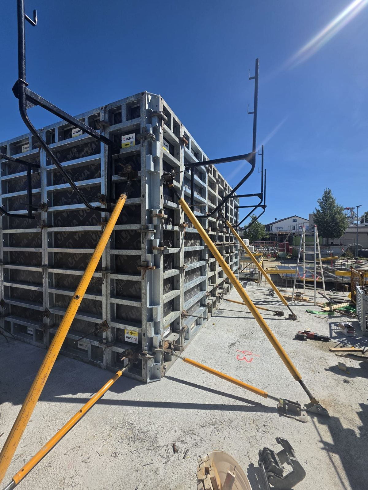
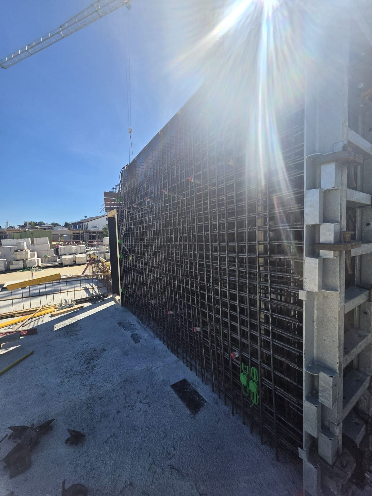
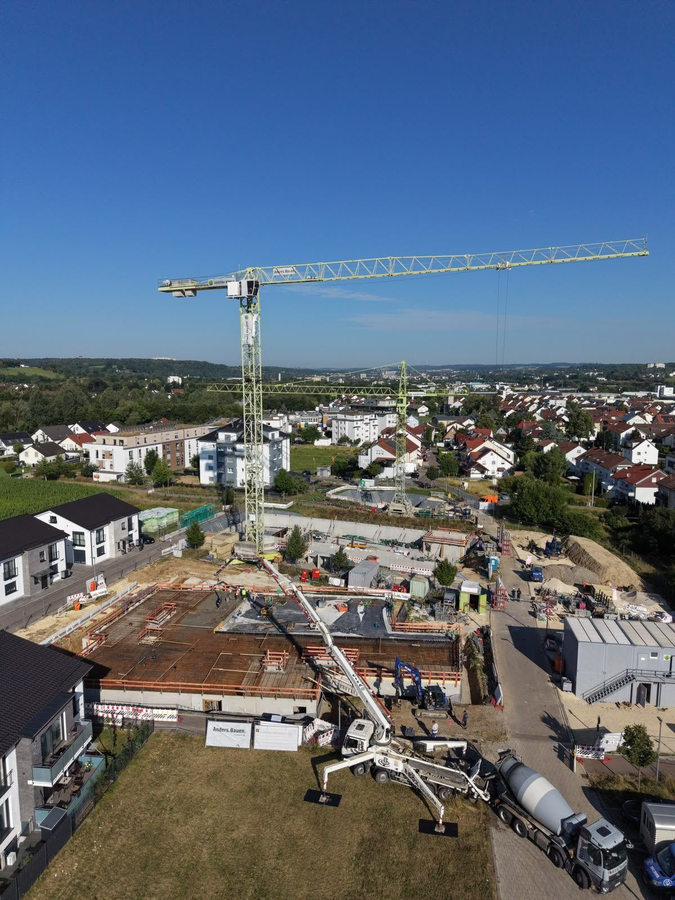

Über uns
Ihr Nachunternehmer für den Rohbau
Generalunternehmer und Bauträger beauftragen OmniProjekt, wenn Schalung, Bewehrung, Beton und Mauerwerk zuverlässig und im Takt laufen sollen. Sie bringen Auftrag, Planung, Material und Kran mit, wir die Leute, die damit umgehen können.
Unsere 105 fest angestellten Mitarbeiter arbeiten in eingespielten Kolonnen mit eigenem Polier, deutscher Bauleitung und eigener Vermessung. Vom Fundament bis zur letzten Decke haben Sie einen festen Ansprechpartner.
- Sitz
- Dietzenbach, Hessen
- Rolle
- Nachunternehmer
- Einsatzgebiet
- bundesweit


Darauf können Sie bauen
Termintreu
Regeltakt von sieben Kalendertagen je Geschoss, bei vollständiger Planung schriftlich zugesagt.
Eigene Mannschaft
Keine Leiharbeit. Dieselben Gesichter von der Bodenplatte bis zur letzten Decke.
Lückenlos dokumentiert
Alle Nachunternehmerunterlagen liegen vollständig und aktuell vor: Freistellungsbescheinigung nach § 48b EStG, Unbedenklichkeitsbescheinigungen von SOKA-BAU und BG BAU, A1-Bescheinigungen und Betriebshaftpflicht. Sie bekommen sie mit dem Angebot, ohne nachzufragen.
Eigene Vermessung
Eigene Vermesser auf der Baustelle: Achsen und Höhen werden je Geschoss kontrolliert, ohne Wartezeit auf Dritte.
Deutsche Bauleitung
Ihr Ansprechpartner auf der Baustelle spricht Ihre Sprache und kennt VOB, DIN und Ihre Abläufe.
Leistungsspektrum
Was wir ausführen
Einzeln oder im Paket beauftragbar, im Stundenlohn, nach Einheitspreis oder pauschal je Regelgeschoss.
Schalarbeiten
Wand-, Stützen- und Deckenschalung mit Ihrem Schalsystem.
Bewehrung
Matten, Stabstahl, Anschlusskörbe. Abnahme vor jeder Betonage.
Betonarbeiten
Einbau, Verdichtung, Oberflächen bis Sichtbeton SB2, Nachbehandlung.
Mauerwerk
Planmauerwerk, Stürze, Ringanker, Abmauerungen.
Vermessung
Absteckung, Achsen und Höhen durch eigene Vermesser, abgestimmt auf den Takt der Kolonne.
Referenzen
Wo unsere Kolonnen stehen
 Öffentlicher Bau, läuft
Neubau Gymnasium KemptenLäuft, Oktober bis Dezember 2026
Öffentlicher Bau, läuft
Neubau Gymnasium KemptenLäuft, Oktober bis Dezember 2026
 Infrastruktur, läuft
Pfahlköpfe für den GleisbauLäuft, seit September 2026
Infrastruktur, läuft
Pfahlköpfe für den GleisbauLäuft, seit September 2026
 Wohnen, läuft
Wohnquartier im KlingelgrabenLäuft, Juni bis Dezember 2026
Wohnen, läuft
Wohnquartier im KlingelgrabenLäuft, Juni bis Dezember 2026
 Gewerbe, abgeschlossen
REWE Neu-IsenburgAbgeschlossen, Mai bis August 2026
Gewerbe, abgeschlossen
REWE Neu-IsenburgAbgeschlossen, Mai bis August 2026
Unsere Jobs
Wir stellen ein, das ganze Jahr
Bautarif plus Zulagen, Unterkunft gestellt, Heimfahrt freitags. Bewerbung ohne Anschreiben, eine kurze E-Mail reicht.
Haben wir Ihr Interesse geweckt?

Schreiben Sie uns
Schicken Sie uns Bauvorhaben, Ort und Wunschtermin. Wenn Sie Schal- und Bewehrungspläne schon haben, hängen Sie sie gleich an.
E-Mail schreiben OmniProjekt GmbHHans-Böckler-Str. 5
63128 Dietzenbach